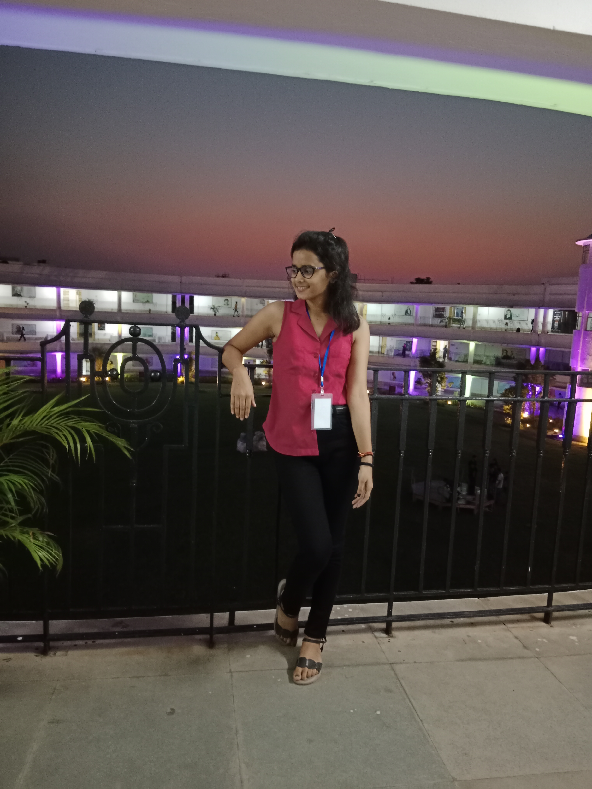

Hello, My Name is Sony kumari.
I'm a Sophomore
And i am a passionate software engineer with a knack of learning something new everyday.
My skills set include proficient in C,Python,SQL,DBMS,Front-end web development(HTML,CSS,JavaScript).

Work Experience

Member of Youth Parliament (2017)
I had represented the school at rfegional level in youth Parliament with my team which consists of
the member 55-60 and had secured the 4th position.
House sports Vice-Captain (2019-2021)
Represented the house as a vice captain in different types of the game oraganised in the school.Secured the position in
relay race,kabaddi, badminton and etc.
CSI Volunteer (Sep 2022-April 2023)
CSI is a one of the Techincal society in our college of 12 members in a team.
CSI Coordinator (Apr 2023-Present)
Have organised a workshops on various topics like web development, Android development and quiz competition
among the 100-150 college students.

HTML Developer (2021-present)
Have done the projets using HTML,CSS And Js.